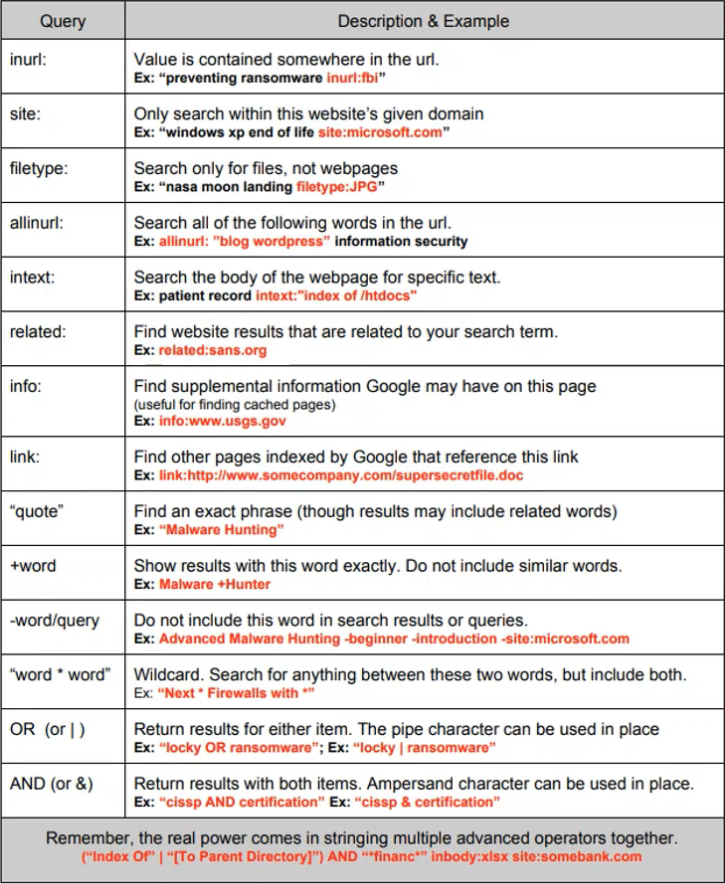

Note: Much of the below information is summarized from OSINT Combine’s course “Trace Labs OSINT Foundations Course”. Much credit goes to Chris Poulter’s expertise! Check out their website and partners the sources
Open Source Intelligence (OSINT) is a way of searching for information on only publicly available sources (open source). While this may seem to be the same way everyone searches for information, there are many tools and methodologies that can be used to enhance your research capabilities. This post will dive into a few of the basic ways in which you can improve your current skills and expose you to new resources to get you started on the path to OSINT.
Table of Contents
- Table of Contents
- Advanced Google Searching
- People Search Engines
- Username Correlation
- Reverse Image Searching
- Cross-Platform Social Media Network Analysis
- Sources
Advanced Google Searching
Google Dorks
Google Dork Query (or just a Google Dork) is a way of using Google’s search features in an advanced way, allowing you to add parameters to specify your search results.
The first way to narrow down your results is by adding a query to your search. Here is a table with all of the different types of Google queries along with examples on how to use them. Don’t forget, you can have multiple queries in the same search to get even better results: 
- The boolean operators (the last six entries in the table), can often be used the same way in other search engines and applications
Date Range
Google has a feature called “Tools” that allows you to specify how recent you want your results to be, and additionally has a “Custom” option to specify a date range.
 However, if we want to have this same feature with more control, then we can use the
However, if we want to have this same feature with more control, then we can use the after and before queries. To use them, follow this syntax:
after:year/month/day- Ex:
osint after:2021/08/16- to search for results related to osint published AFTER August 16th, 2021
- Ex:
before:year/month/day- Ex:
osint before:2021/08/16- to search for results related to osint published BEFORE August 16th, 2021
- Ex:
We can even combine the two queries together to specify a date range:
- This search would find results related to “OSINT” between the range of June 1st, 2020 and January 1st, 2021
Icon Searching
Often times, certain types of information are accompanied by icons, and Google actually allows us to search by icons. It’s as simple as copy pasting the icon you want into the search bar. A good place to look for common icons is on Alt-Codes.net. This site stores lots of different icons that you can copy into the search bar.
To make our searches more advanced, we can combine this feature with our previous queries.
- Say we wanted to find the contact information for lawyers in New York. We can find common icons for contact info here, and then can make a query like this:
site:linkedin.com/in "lawyer" (☎ OR ☏ OR ✆ OR üìû OR üì± OR ℡) AND New York
Adding/Limiting Displayed Results
Normally, Google limits the number of results shown per page to ten. In some situations it may be more convenient for us to have more or less results. To do this, go to the end of the URL of your search query and add &num=numberOfResults where numberOfResults is an integer number of how many results you want shown per page.
- For example, if I were to append
&num=2to the end of the URL, my results page would look like this:
Cache Searching and Anonymity
Another query option we have is the cache:domainName query. This query will take us directly to a cached version of whatever website we enter. This means that instead of making a connection with the actual website servers, we are instead accessing a Google stored “snapshot” of the website from a previous date. An example would look something like this:

- You can see in the header of this page it shows the domain name, time of the “snapshot” and three different modes with “Full Version” selected
By default, we will be on the “Full Version” of the cache, meaning that Google will attempt to recreate the website as well as it can, including requesting any and all images or media from the website’s server. However, if we wanted to remain entirely anonymous, we can instead access the “Text-Only Version” (which will only load the text and any images stored in the source code, never accessing the website’s server) by doing the following:
- Find your website on Google by searching
site:domainName - Select the three vertical dots to the right of the URL, a pop up like this should appear:
- At the bottom on the pop-up, right click the “Cached” button and select “Copy Link Address”
- Paste the copied link into the URL search bar, append
&strip=1to the end, and press enter. You should get a result like this:
Event Searching
Google does a very good job at finding and organizing any instances of events. This can be helpful for us, because instead of having to find the event organizer to research an event, we can instead use Google to more efficiently find out all the same information.
To do so, visit https://google.com/search?q=desiredSearchParam&ibp=htl;eventswhere desiredSearchParam is whatever you are searching for. You should get a page like this:
People Search Engines
Webmii
- A people search engine using Google
- Compiles in a readable format
- Provides an “accuracy score” for results
- Searches the broader internet
- Drawbacks:
- The “certainty level” score can be very low
- Algorithm used to search is not publicly available
- Requires manual effort to validate info (false positives)
PeekYou
- Name, username, broader social media search
- Presents results with good detail
- U.S. focused, but can extend to global searches for social media and usernames
- Can preview social media sites
- Lowers attribution levels since you’re not visiting the social sites
- Drawbacks:
- Lots of links to scam websites
411.com
- People search for U.S. only (uses WhitePages data)
- Phone and reverse address lookup options
- Age and state filtering features
- Drawbacks:
- Constantly wants you to buy premium (can still use information effectively)
ThatsThem
- U.S. based people search
- IP address correlation feature
- Metric for “social score”
- Drawbacks:
- Has a limited number of searches per day if your not signed up
Zoominfo
- Append the URL with
\<first>/\<lastname>to specify a person - Built for business professionals
- Can be Google searched
- Drawbacks:
- Paid platform but has free get-arounds
Intelius
- U.S. based searching
- Basic info for free
Whitepages.com.au
- Australian only dataset
- Drawbacks:
- Requires connection from Australia (use VPN)
Username Correlation
This is the process of taking a username and using it to find other accounts across different social media platforms. There is a process that we should follow to ensure validation and continual searching:

Finding Usernames
To verify if a certain platform has a specific username, you can use the below tools/strategies. Make sure to cross check results with multiple resources to eliminate false positives:
- Name Ch_k
- Note that green means the username is AVAILABLE on the site while red means it is taken
- This site is prone to false positives
- The goal is getting started/efficiency, not validation
- Name Checkup
- Note that green means the username is AVAILABlE, there is a key in the top right for all colors
- This site is also prone to false positives - The goal is getting started/efficiency, not validation
- Advanced Google Search (Google Dork)
site:socialMediaSite.com "username"- This will show a result searching only this website for instances of the username
- The preview text can also be very helpful
- Can also add an
@in front of the username (if applicable) to narrow down results
- Search Social Media Website
- Many social media websites have a special URL for each user which can be searched to see if there is an existing page
- Common Formats:
- facebook.com/username
- twitter.com/username
- instagram.com/username
- youtube.com/user/username
- tiktok.com/@username
- linkedin.com/in/user-name
- LinkedIn sometimes adds random characters to usernames which will require you to search them separately
Account Information Gathering
Once you’ve found the account, you will want to observe as much as you can, with extra emphasis on the below catagories. All of this information can be used to cross check users across different platforms to increase the level of certainty:
- Any links to additional social media
- About Section
- If content is reused across different social media accounts
- Personal Information
- Posting patterns
- Frequency
- Content type
- Original posts vs. reposts
- Length/Sincerity of posts
- Friends
- Friends that commonly interact pn posts
- Number of followers/following
- Photos
- Nicknames
- Especially ones that can be used as alternative usernames
Reverse Image Searching
There are many search engines for reverse image searching, each with their pros and cons:

- Particularly good with locations and structures
- Results broken down by:
- Image Size
- Results of where image is located on the internet
- Visually Similar Images
- Pages that include this image
- Russian search engine similar to Google/Bing
- Leader of identifying individuals and finding matching images across the internet
- Can select specific parts of the picture to search
- Very efficient
- Best for searching across LinkedIn (owned by same company)
- Focuses on finding exact image matches
- Helpful for copyright searching
- Tool created by OSINT professionals to combine some of the above sources into one easy to use resource
- Has additional filtering capabilities (such as partial vs full matches)
Image Text Translation
It is helpful to be able to transcribe or translate text found in images. Many resources make frequent errors so make sure to cross check against different resources:
- Only works with a local file (must be downloaded)
- Will not translate directly, will have to copy text and put into translator
Cross-Platform Social Media Network Analysis
Social network analysis (SNA) is critical for:
- Identifying broad network associates
- Understanding usage clusters (groups of individuals) for associates
- Verifying associated metadata for clusters
- Can be visualized (using sociograms) to tell stories/assist in understanding an individual
To better understand SNA, here is some of the basic terminology used:
 Types of Relationships Visualized:
Types of Relationships Visualized:
- Simple Relationship (A — B)
- Directed Relationship (A —> B)
- Symmetric Relationship (A <—> B)
Scraping Information
It is hard to manage all observations/information gathered from a social media account, so web scraping tools can be utilized to collect information and allow for customization/editing: Note: You will need to sign into an account to use these tools, MAKE SURE YOU USE A FAKE ACCOUNT WHEN DOING SO!!
- Facebook
- Mbasic: Will open and scrape likes from multiple photos
- Append
/username/friendsto the website to scrape friends list
- Append
- Mbasic: Will open and scrape likes from multiple photos
- Twitter
- Tweetbeaver: Will download users “favorites”, friends list
- Instagram
- Spatulah: Will download comments for multiple posts
- You can just copy paste a users’ friends list online
Visualization
Once we have scraped all of our information and placed it into a csv file, we want to visually model it:
- OSINT Combine
- Provides rapid data visualization within the browser
- Limited to smaller datasets
- Gephi
- Large scale data visualization
- Requires software installation


Please share using the links if you enjoyed!